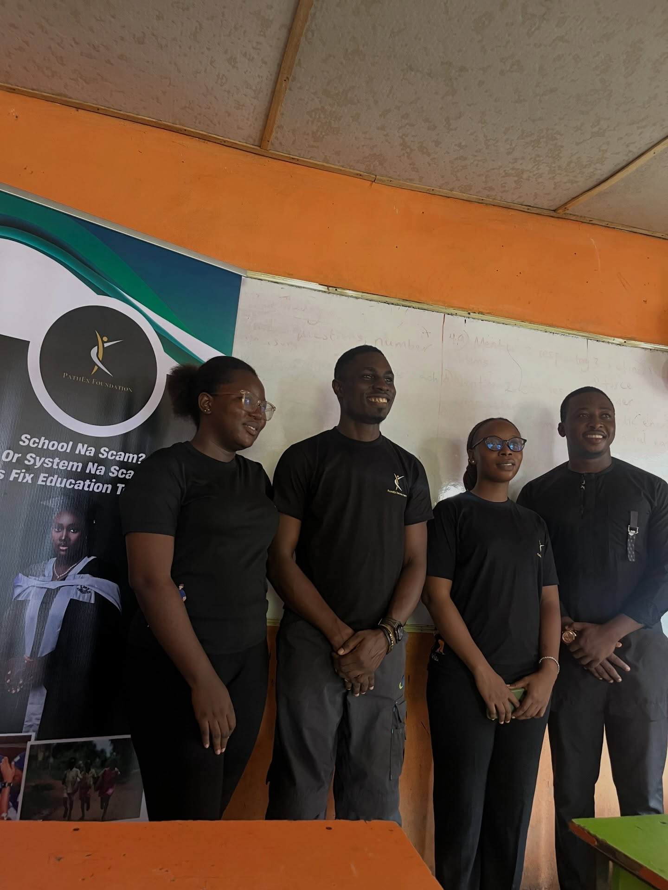
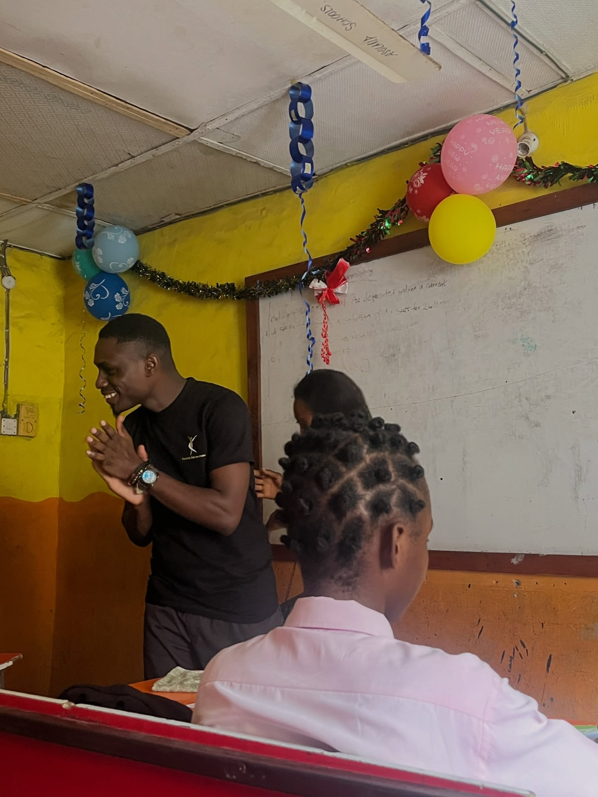
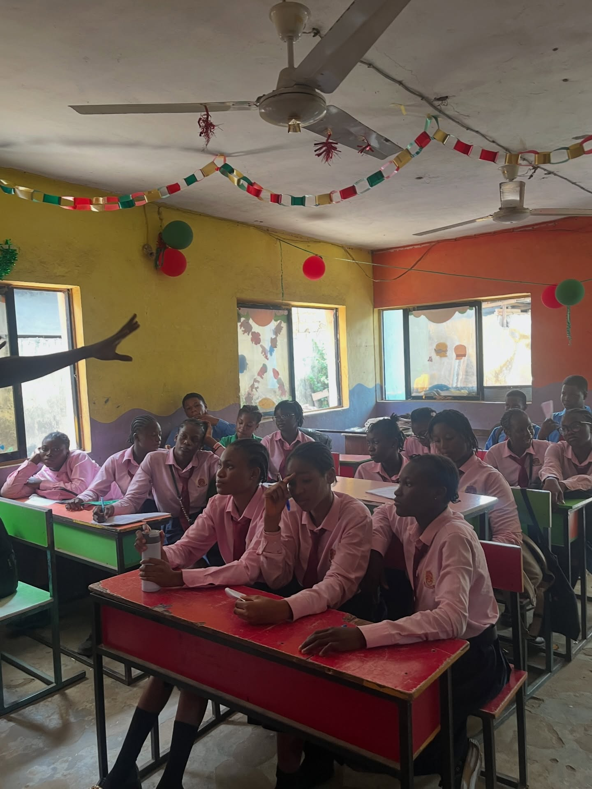
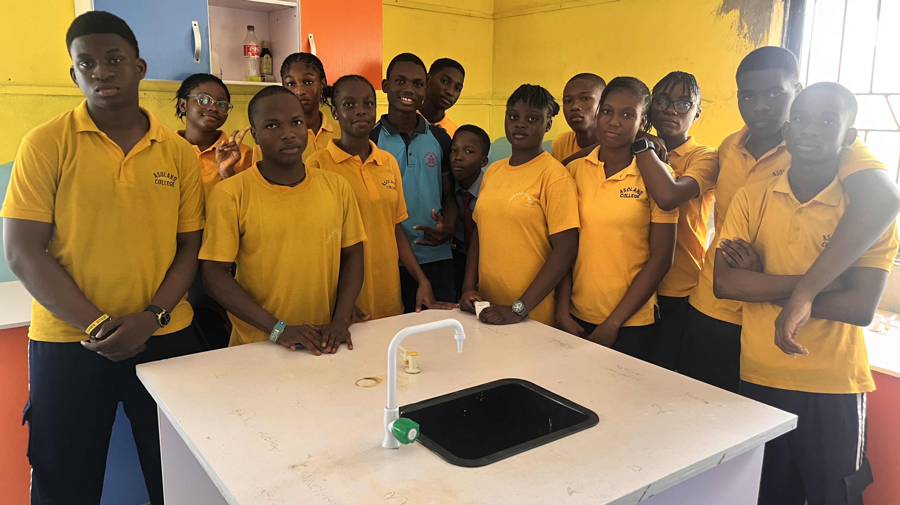
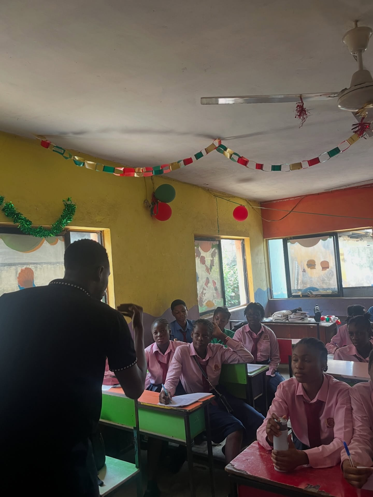

SDG 4 · Quality Education, In Practice
School is not a scam. It's a path.
PathEx Foundation walks with ultimate and penultimate secondary school students through the confusion of "what next"; toward university admission, scholarship, and a future they can actually see.
Who We Are
A foundation built at the fork in the road.
Founded in 2025 by Oluwadamisola Adeyinka — teacher, writer, and mentor — and Chinonyerem Usuwa — scholar and biochemist, PathEx Foundation exists for one specific moment: the point where a secondary school student stands between exams and everything after.
That fork is where SDG 4 lives or dies for a young person. Not in the abstract goal of "quality education," but in whether a 17-year-old in SS3 knows what a course code means, whether JAMB fees are the reason they don't sit an exam, or whether anyone has ever told them their path is still theirs to choose.
We work specifically with ultimate and penultimate secondary school students — SS2 and SS3 — because that is the narrowest, most decisive window in a student's academic life.
Why We Exist
A generation of secondary school leavers who walk into their post-secondary lives with direction, not default — where no student's future is decided by a lack of information or a lack of funds.
To guide, mentor, and resource ultimate and penultimate secondary school students through career clarity, exam access, and real exposure — closing the distance between SDG 4's promise of quality education and what students actually experience on the ground.
Make career direction concrete — before the exam hall, not after.
Remove cost as a barrier to sitting JAMB and standardized exams.
Put students in rooms — and companies — they'd otherwise never reach.
Our Work
The path so far.
Education Impact Programme (EIP) — Asoland College
Our first project put us in front of over 70 students for a direct conversation about career projection — and a single, deliberate message: school is not a scam. We broke down what different paths actually lead to, and how the choices made in SS2 and SS3 quietly shape everything after.
JAMB Scholarships
We've offered 10 JAMB scholarships to students for whom exam fees stood between them and university — because a student's ambition should never lose to a registration fee.
Handpicked Mentorship Track
A small, deliberately chosen group of students is invited into a deeper, life-changing programme — sustained mentorship, one-on-one guidance, and access to rooms and opportunities most students their age never see.
What It Adds Up To
Numbers with a face behind each one.
Moments
From the classroom to the path forward.
A look at the sessions, students, and small moments behind the numbers above.





Founders
Two paths that converged into one.
Oluwadamisola Adeyinka
Teacher · Writer · MentorCo-founded PathEx Foundation to put words and structure around a question he kept meeting in classrooms: what happens to a student the day after they leave school? His work with students shapes the Foundation's belief that direction is a skill that can be taught.
Chinonyerem Usuwa
Scholar · BiochemistBrings a scientist's precision to the Foundation's programmes — treating career guidance as something that can be studied, measured, and improved, not left to chance. Her own path through science informs how PathEx builds evidence into every mentorship track.
Who Walks With Us
The path is wider with partners.
No single organization closes the gap in SDG 4 alone. These are the partners extending what PathEx Foundation can offer students.
Delta Arts
Creative EducationTogether with Delta Arts, we open a path into the creative industry for students drawn to art, design, and the world beyond conventional career tracks — showing that "creative" and "career" were never opposites.
Saint Agomeze Foundation
ScholarshipsIn partnership with the Saint Agomeze Foundation, we extend scholarships to ambitious students — because ambition should never be the thing a student has, while funding is the thing they lack.
Get Involved
Every path needs company.
Whether you're a student looking for direction, a mentor with time to give, or someone who wants to fund the next scholarship — there's a place for you on this path.